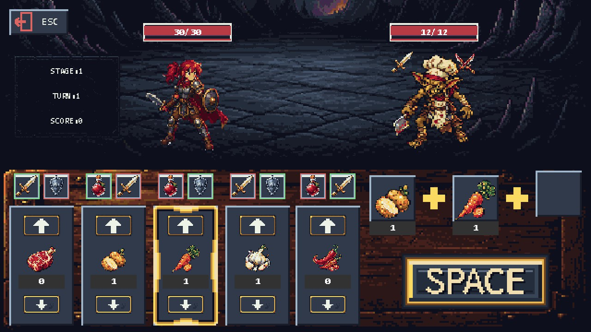
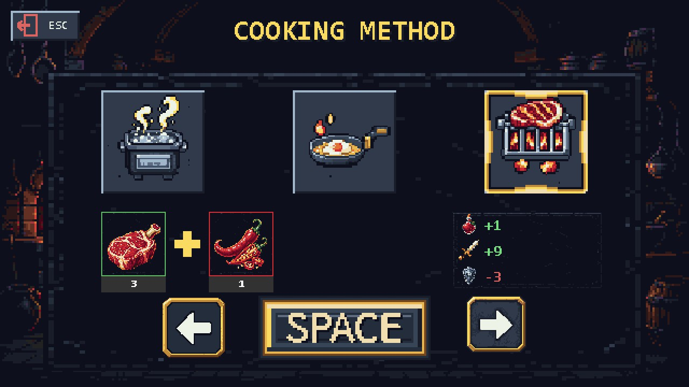

01 · 아이디어
전투를 직접 조작하는 대신, 요리로 용사를 지원하는 게임입니다. 재료의 조합과 조리법이 용사의 능력치에 영향을 주도록 구성했습니다.
1.44MB 게임 개발 공모전 출품을 목표로, 제출물 전체를 1,474,560바이트 이하로 만드는 제약 안에서 기획했습니다.
02 · 무엇을 만든 건지
용사의 쉐프는 재료를 구매하고 요리해 용사의 전투를 돕는 Windows 독립 실행형 게임입니다. 기존 개발 문서의 이름은 ‘용사의 요리사’입니다.
- 주사위를 굴려 구매 자원을 정하고 재료를 구매합니다.
- 보유 재료 중 최대 세 개와 끓이기·튀기기·굽기 중 조리법을 선택합니다.
- 요리 효과를 용사에게 적용하고 전투를 진행합니다.
- 스테이지를 완료하면 점수를 정산하고 다음 단계의 버프를 선택합니다.


이 흐름은 게임 규칙을 설명한 것으로, 재미나 사용성을 측정한 결과는 아닙니다.
03 · 환경
- 내 역할
- 아이디어 제공
- AI 활용 범위
- 아이디어 제공 외 전체
- 기술 환경
- C17 · Windows API · winmm
- 실행 환경
- Windows · 독립 실행형
아이디어를 바탕으로 구현과 문서 작성 전반에 AI를 활용했습니다. 작업 기록은 사람이 작성한 원안, 검토 제안, 승인된 개발 기준을 구분하는 방식으로 관리했습니다.
외부 라이브러리 없이 구성하고, 실행에 필요한 제출 폴더 전체의 용량을 빌드 과정에서 검사하는 방식을 사용했습니다.
04 · 작업물
공모전 제출 완료 · 제출물 용량 제한 충족
제출 폴더에서 Windows 실행 파일과 압축 파일을 확인할 수 있습니다.
제출 완료와 용량 제한 충족은 제작자 확인에 근거합니다. 기존 기록에는 자동 규칙 검증과 수동 전체 플레이 확인이 남아 있습니다. 이 페이지를 정리하면서 파일을 다시 실행하거나 최종 바이트 수를 재측정하지 않았으며, 과거 검증과 이후 화면 개선 검수는 구분합니다.
05 · 코멘트
작성 예정